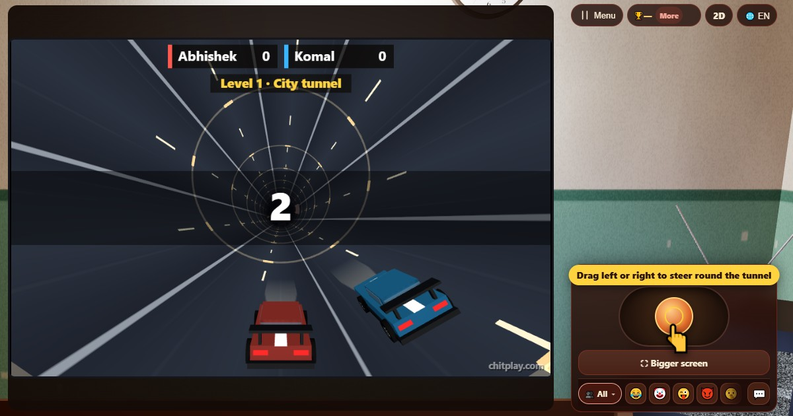

ٹربو ٹنل (Turbo Tunnel)
- 👥 1–4 کھلاڑی
- آرکیڈ گیمز (3D ٹی وی پر)
- 🆓
اردو گائیڈ
نہ ختم ہونے والی سرنگ کے اندر گاڑی دوڑائیں۔ ٹریفک، لیزر اور گرتے پتھروں سے بچیں، نائٹرو لیں۔
English name: Turbo Tunnel

کیسے کھیلیں
- اسٹک کو بائیں یا دائیں گھسیٹیں، یا A اور D، ایرو کیز یا گیم پیڈ سے گاڑی کو سرنگ کے اندر گول گھمائیں۔
- کون، رکاوٹیں، گاڑیاں، ٹرک اور پتھر چھو گئے تو دوڑ ختم۔ جس چیز سے آپ کی گاڑی ٹکرانے والی ہو، اس کے نیچے سرخ روشنی چمکتی ہے۔
- سرنگ کی ہر قطار میں ہمیشہ ایک کھلا راستہ ہوتا ہے جہاں آپ وقت پر پہنچ سکتے ہیں۔ سڑک پر ہلکے ہرے تیر اسے دکھاتے ہیں۔
- سکے کے 10 پوائنٹس۔ نیلا نائٹرو پیڈ تین سیکنڈ تک فاصلے کے پوائنٹس دگنے کرتا ہے۔ ہری ڈھال ایک ٹکر خود جھیل لیتی ہے۔
- تیل سے دوڑ ختم نہیں ہوتی، مگر گاڑی پھسلتی ہے اور کچھ دیر اسٹیئرنگ دھیرے مانتی ہے۔
- کسی چیز کے بالکل پاس سے نکلیں تو بال بال بچے: 5 بونس پوائنٹس۔
پوائنٹس کیسے ملتے ہیں
جتنا چلائیں اتنے پوائنٹس (نائٹرو پر دگنے)، ہر سکے کے 10 اور ہر بال بال بچنے کے 5۔ 100، 300، 700 اور 1500 پوائنٹس پر میڈل۔
کون جیتتا ہے
اکیلے ہوں تو اپنا بہترین اسکور توڑیں۔ دوستوں کے ساتھ سب ایک ہی سرنگ میں ایک ساتھ دوڑتے ہیں: جو گاڑی آخر تک چلتی رہے وہ جیتتی ہے، اور سب ٹکرا جائیں تو سب سے زیادہ اسکور جیتتا ہے۔
اکثر پوچھے جانے والے سوالات
کیا یہ مشکل ہے؟
یہ آہستہ اور چوڑے راستوں سے شروع ہوتا ہے۔ ہر قطار میں ہمیشہ نکلنے کا راستہ ہوتا ہے، اس لیے ٹکر کبھی بدقسمتی نہیں ہوتی۔
کیا میں دوستوں سے دوڑ لگا سکتا ہوں؟
ہاں۔ ایک ہی سرنگ میں چار گاڑیاں: ایک اسکرین پر، نیئربائی سے اپنے اپنے فون پر، یا آن لائن۔
کیا کچھ ڈاؤن لوڈ کرنا ہوگا؟
نہیں۔ یہ فون، ٹیبلیٹ یا کمپیوٹر کے براؤزر میں مفت چلتا ہے۔
کیا یہ دوسرے سرنگ والے کھیلوں جیسا ہے؟
یہ ہمارا اپنا خیال ہے: اصلی گاڑیاں اور ٹریفک پوری سرنگ کے اندر گول گھومتے ہیں، اور ہر لیول میں نیا خطرہ آتا ہے۔
کیسے کھیلیں
- مہمان کے طور پر: نہ رجسٹریشن نہ لاگ اِن۔ نام چنیں اور فوراً کھیلیں۔
- کمپیوٹر کے ساتھ: کوئی نہ ہو تو خالی جگہیں کمپیوٹر کھلاڑی بھر دیتے ہیں۔ آسان، نارمل یا مشکل۔
- آن لائن: دنیا بھر کے کھلاڑیوں والی کھلی میز پر بیٹھیں۔
- قریب کے دوستوں کے ساتھ: ایک فون پر گیم شروع کریں اور کوڈ یا QR کوڈ بھیجیں۔ دوست اپنے فون سے شامل ہو جاتے ہیں۔
- ایک فون پر: باری باری فون آگے بڑھائیں: پورے گھر کے لیے ایک فون کافی ہے۔
دوسری زبانیں
- हिन्दी: टर्बो टनल
- Hinglish: Turbo Tunnel
- Español: Turbo Tunnel
- Português: Turbo Tunnel
- Français: Turbo Tunnel
- Deutsch: Turbo Tunnel
- Bahasa Indonesia: Turbo Tunnel
- Türkçe: Turbo Tunnel
- Italiano: Turbo Tunnel
- 日本語: ターボトンネル
- 한국어: 터보 터널
- 中文: 涡轮隧道
- Русский: Турбо-тоннель
- नेपाली: टर्बो टनेल
- বাংলা: টার্বো টানেল
- English: Turbo Tunnel · مکمل اصول (انگریزی)
تمام گیمز


ChitPlay میں اصلی پیسے، شرط یا انعام نہیں ہیں۔ پوائنٹس کی کوئی قیمت نہیں۔